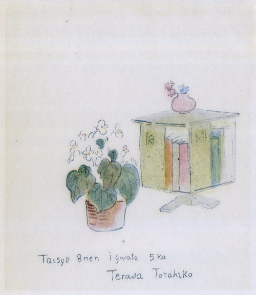

巻頭の一文でちょっと触れたように、我が国の現状は、寺田寅彦の再認識を必要とする時期に到達しているように思われる。
尾崎行雄氏が、われわれは自由を
それで何かそういう口火になるようなものを書きたいと思ったのであるが、正式にそれをするには、まず英文三千頁に余る先生の論文集をよく読んで、それを祖述する必要がある。しかし先生の論文は、実験物理学の各部門、地球物理学、気象学、海洋学とあらゆる分野に亘っていて、しかも英文の論文が計二百十一篇、邦文のものが計五十八篇という量である。現在の私の職務の傍らの仕事としては、その全部を詳しく解説することは不可能である。
それでは一通り
しかしそれを完了するには、どうしても三年や五年の年月は要るであろう。それでさし当たりの問題としては、断片的に先生の人間の片鱗を手当たり次第に描いて、そういう文章を沢山集めて、漠然とした形ながら、科学と文学との融合した形に於ける先生の全貌を伝える試みが残されているばかりである。今までに先生のことを書いた文章は、主として『冬の華』に纏めておいたが、その後書いたものは、方々に散らばっている。この際それらを纏めて一冊にしておいた方が、私にも便宜であり、一部の読者にも何らかの意味で役に立つこともあろう。そういう意味で、蒸し返しのようではあるが、この書を世に送る次第である。
『寺田寅彦の追想』は、今度新しく書いたものである。『物理学序説の後書』は、岩波書店で、最近に先生の『物理学序説』を単行本として出すに際して、その解説のつもりで書いたものである。この『序説』は、私には先生の沢山の著述の中でも特に価値の高いものと思われるのであるが、従来は全集におさめられただけで、一般読者には読む機会の少なかったものである。
そのほか『実験室の思い出』は『第三冬の華』に載せた文章の一部を削り、ちょっと筆を入れたものであり『札幌に於ける寺田先生』は『樹氷の世界』から転載したものである。その他の十二篇、即ち本書の大部分を占めるものは『冬の華』に一度発表したものである。今度それらを纏めるに当たって、著しく重複になるところを削除し、一部筆を加え、なるべく全体として形がととのうようにつとめた。また前には伏せておいた先生の周囲の人々の名前を、今度は大体本名に改めた。もう旧い話になるから、少し御迷惑かもしれないが、御容赦を願いたい。それに『追想』に先生の日記を引用し、その中に皆名前が出ているので、伏せる必要も余りなくなったわけである。
口絵の寺田寅彦像は、津田青楓さんの筆で、私が伊東で療養中に恵与されたものである。先生の「書架と花」の絵も、その時一緒に津田さんから貰ったものである。「書架と花」に大正八年一月五日とあるが、ちょうど先生の吐血の年の正月のことで、年譜にもその前年の暮れから「胃の工合が良くなかった」とある。胃潰瘍がだんだん進行して、先生は少し静養を必要とされ、時々津田さんのところなどへ遊びに行かれて、毛筆淡彩の素描などを試みておられた。この正月の前年の秋には、中央公論に『津田青楓君の画と南画の芸術的価値』を書かれた。その頃津田さんのところで描かれた絵の一枚が、この「書架と花」であって、それが

書架と花 寺田寅彦画
寅彦像もその頃描かれたもので、先生四十二歳頃のものである。年のわりにひどく老けて見え、また随分痩せておられるが、恐ろしい大患が、先生の身体の奥で進行中であったからであろう。津田さんの御蔭でこの二枚の絵を本書におさめることが出来たことを感謝している。
感謝といえば、この本の大部分は、岩波書店の特別の好意によって『冬の華』から再録することを許されたのであって、私にとっては誠に有り難いことである。
（昭和二十一年九月）
（於札幌） 宇吉郎記